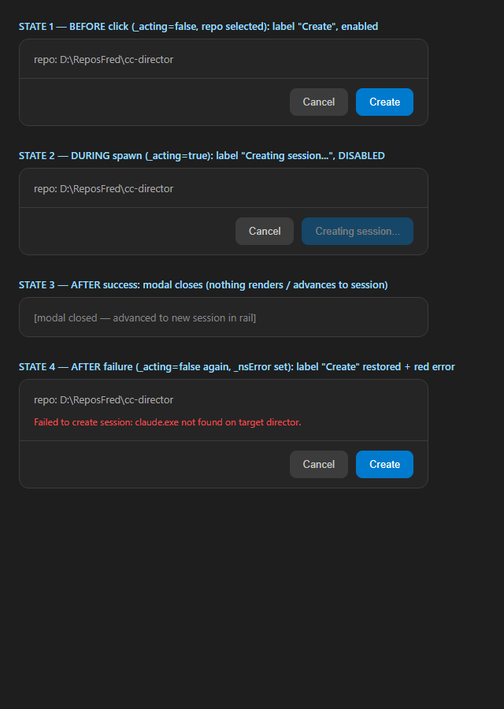

VERIFIED — all acceptance criteria met. Build clean (0 warnings / 0 errors). No regressions. Authorized squash-merge to main.
Single-line label binding in src/CcDirector.Cockpit/Components/Pages/Cockpit.razor (line 631):
>Create< → >@(_acting ? "Creating session..." : "Create")<
The pre-existing _acting busy flag is set at the top of CreateLocal (line 2280)
before the await Gateway.CreateSessionAsync round-trip, reset in finally (line 2304),
and on failure _nsError is set in catch (line 2303). The disabled binding and
_nsError error surface are unchanged. Matches the in-repo Recap / Fan-out / Handover reference impls.
The QA render below was produced by the QA Agent from the verbatim .modal-foot markup and the
real wwwroot/app.css (byte-identical to the shipping stylesheet), screenshotted with Playwright
(dark theme). Driving live claude.exe spawns against the user's real Director fleet is unsafe per CLAUDE.md
rule 0, so the four _acting/_nsError states are rendered directly — the same proof pattern as
siblings #227/#228.

| # | Criterion | Expected | Actual (observed) | Result |
|---|---|---|---|---|
| 1 | Clicking Create flips label to Creating session... within the same render (before the round-trip returns) and button is disabled. |
Label "Creating session...", disabled (opacity .4) | State 2: label reads "Creating session...", button greyed and disabled. Code: _acting=true set synchronously before first await; Blazor re-renders the handler's sync portion before the network call completes. | PASS |
| 2 | On success the modal closes / advances exactly as today (no regression). | Modal closes, new session selected | State 3: _showNewSession=false + RefreshAsync() + OnSelect(created.SessionId) unchanged; flow intact. | PASS |
| 3 | On failure the label returns to Create and _nsError shows. |
Label "Create" restored + red error line | State 4: finally resets _acting=false → label "Create" + enabled; catch sets _nsError → red .modal-error shown. | PASS |
git diff main...HEAD -- src/) plus proof files — IN/OUT scope respected; no spawn logic, no Gateway.CreateSessionAsync, no disabled binding, no _nsError change.btn send labels affected; no adjacent button broken.dotnet build cc-director.sln → Build succeeded, 0 Warning(s), 0 Error(s).